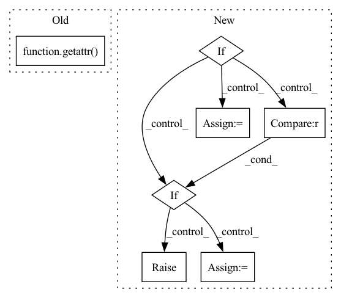

Pattern ID :4064
Before Change
else:
kwargs = {"pretrained": pretrained}
self.model = getattr( torchvision.models, model) (**kwargs)
in_features = self.model.fc.in_features
self.model.fc = nn.Linear(in_features, out_features=1)
After Change
imagenet_pretrained = False
custom_pretrained = False
if self.hyperparams["weights"] and not os.path.exists(
self.hyperparams["weights"]
):
if self.hyperparams["weights"] not in ["imagenet", "random"] :
raise ValueError(
f"Weight type "{self.hyperparams["weights"]}" is not valid."
)
else:
imagenet_pretrained = self.hyperparams["weights"] == "imagenet"
custom_pretrained = False
else:
custom_pretrained = True
// Create the model
valid_models = timm.list_models(pretrained=imagenet_pretrained)In pattern: SUPERPATTERN
Frequency: 3
Non-data size: 7
Instances Fragment ID: 15129510
Project Name: microsoft/torchgeo
Commit Name: d6d568a5e947ccdb04fcdc0dc2baa438618fc65d
Time: 2022-12-07
Author: 35272119+nilsleh@users.noreply.github.com
File Name: torchgeo/trainers/regression.py
M Class Name: RegressionTask
N Class Name: RegressionTask
M Method Name: config_task(1)
N Method Name: config_task(1)
M Parent Class: pl.LightningModule
N Parent Class: pl.LightningModule
M File Name: torchgeo/trainers/regression.py
N File Name: torchgeo/trainers/regression.py
M Start Line: 33
M End Line: 50
N Start Line: 44
N End Line: 84
Before Change
manifest_path = os.path.join(data_path, "{}.tsv".format(split))
if getattr( task_cfg, "clocs", False) :
self.datasets[split] = ClocsECGDataset(
manifest_path = manifest_path,
split = split,After Change
compute_mask_indices = self.cfg.precompute_mask_indices,
**self._get_mask_precompute_kwargs(task_cfg)
)
elif if task_cfg.leads_to_load is not None :
raise AssertionError(
"pre-training 3kg must contain all the 12-leads. "
"please set --leads_to_load to null"
)
inferred_3kg_config = OmegaConf.to_container(
self.cfg.inferred_3kg_config, resolve=True, enum_to_str=True
)
self.datasets[split] = _3KGECGDataset(
manifest_path=manifest_path,
sample_rate=task_cfg.get("sample_rate", self.cfg.sample_rate),
max_sample_size=self.cfg.max_sample_size,
min_sample_size=self.cfg.min_sample_size,
pad=task_cfg.enable_padding,
normalize=task_cfg.normalize,
num_buckets=self.cfg.num_batch_buckets,
compute_mask_indices=self.cfg.precompute_mask_indices,
**inferred_3kg_config,
**self._get_mask_precompute_kwargs(task_cfg)
)
else:
self.datasets[split] = FileECGDataset(
manifest_path = manifest_path,
sample_rate = task_cfg.get("sample_rate", self.cfg.sample_rate),
max_sample_size = self.cfg.max_sample_size, Fragment ID: 15129473
Project Name: jwoo5/fairseq-signals
Commit Name: 94ddd7f3af4fdb088ead2378f5089edc75a5c9d7
Time: 2021-11-05
Author: ojw0123@korea.ac.kr
File Name: fairseq_signals/tasks/ecg_pretraining.py
M Class Name: ECGPretrainingTask
N Class Name: ECGPretrainingTask
M Method Name: load_dataset(3)
N Method Name: load_dataset(3)
M Parent Class: Task
N Parent Class: Task
M File Name: fairseq_signals/tasks/ecg_pretraining.py
N File Name: fairseq_signals/tasks/ecg_pretraining.py
M Start Line: 164
M End Line: 199
N Start Line: 174
N End Line: 227
Before Change
self.conv_out = nn.Conv2d(C, get_num_channels(C), kernel_size=1, stride=1)
if self.final_activation is not None:
self.final_activation = getattr( F, final_activation)
def forward(self, x):
x = self.activation(self.conv1(x))
x = self.activation(self.conv2(x))After Change
self.hyperlatent_likelihood = HyperpriorDensity(n_channels=hyperlatent_filters)
if likelihood_type == "gaussian":
self.standardized_CDF = maths.standardized_CDF_gaussian
elif likelihood_type == "logistic" :
self.standardized_CDF = maths.standardized_CDF_logistic
else:
raise ValueError("Unknown likelihood model: {}".format(likelihood_type))
def latent_log_likelihood_DLMM(self, x, DLMM_params):
Fragment ID: 15129551
Project Name: justin-tan/high-fidelity-generative-compression
Commit Name: bfea0331309355675403fc614470a5914697f92c
Time: 2020-08-18
Author: justan@student.unimelb.edu.au
File Name: src/network/hyperprior.py
M Class Name: HyperpriorDLMM
N Class Name: HyperpriorDLMM
M Method Name: __init__(7)
N Method Name: __init__(5)
M Parent Class: CodingModel
N Parent Class: nn.Module
M File Name: src/network/hyperprior.py
N File Name: src/network/hyperprior.py
M Start Line: 413
M End Line: 425
N Start Line: 427
N End Line: 464